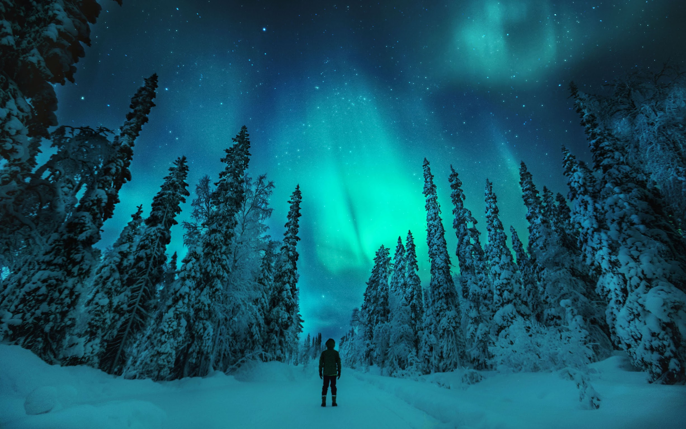

THE OTHERWORDLY AURORA borealis, or nothern lights, begin high in the Earth's atmosphere- at altitutdes from 60 to more than 250 miles- when charged particles from the sun become trapped in the Earth's magnetic field. The result is a colorful, dancing light show.

THE OTHERWORDLY AURORA borealis, or nothern lights, begin high in the Earth's atmosphere- at altitutdes from 60 to more than 250 miles- when charged particles from the sun become trapped in the Earth's magnetic field. The result is a colorful, dancing light show.
The first time I filmed an aurora was from an icebreaker near Antarctica. Luckily, there are much more accessible places if you'd like to take on these light shows yourself. For the best seats to this celestial scene, consider anywhere with a magnetic latitude above 55 degrees and low light polution. Find your magnetic latitude on NOAA and here.
In the polar latitudes, auroras can appear on any dark night. Long winter nights are good but not necessarily the best time. Near equinoxes in March and September, the Earth's magnetic field lets more solar particles interact with the atmosphere, creating aurora seasons. I suggest autumnal equinox in September, when there are pleasant temperatures in polar latitudes. Find the dark hours of your location here or by using a sky guide app.